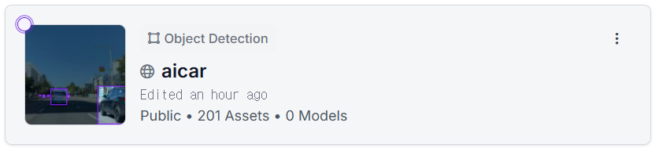
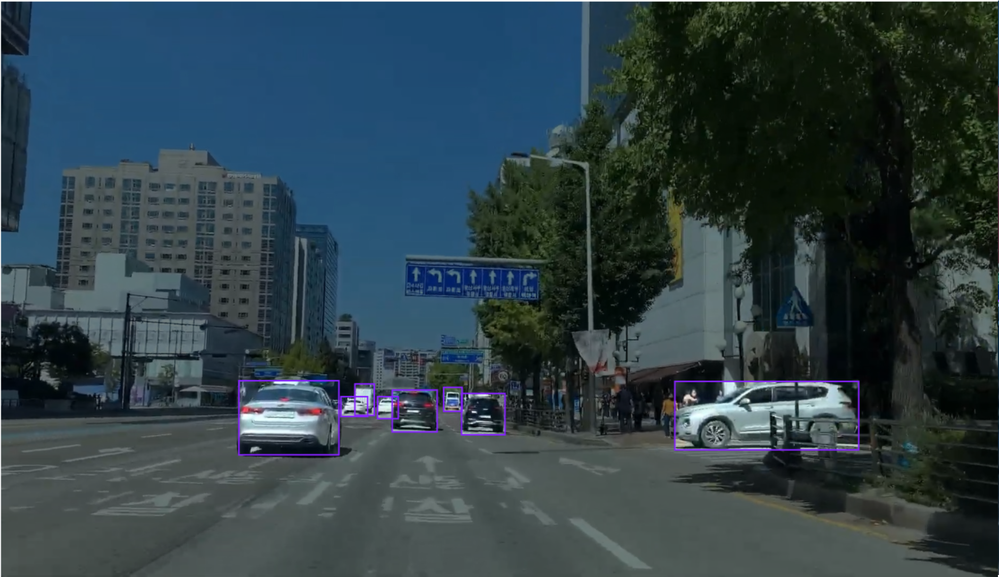
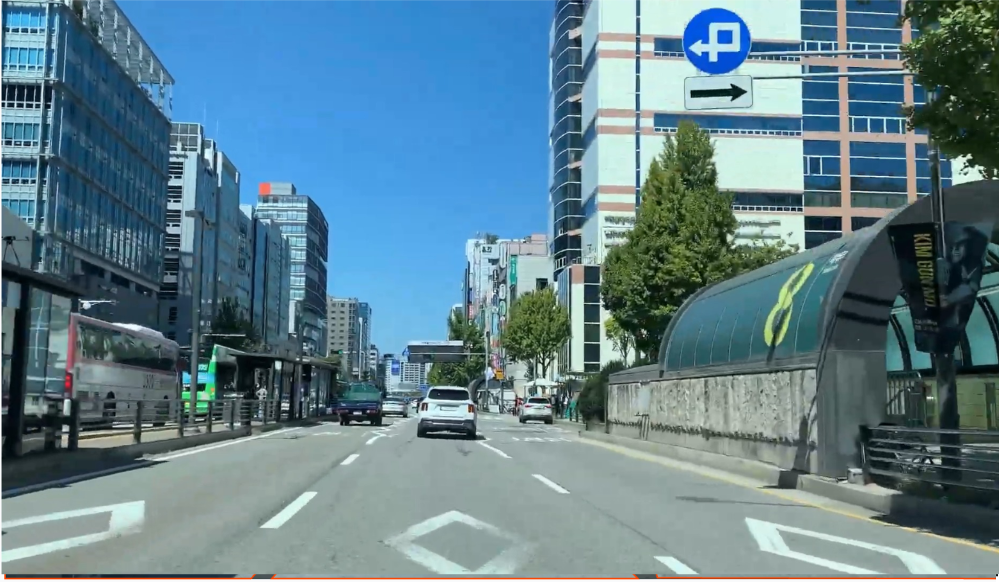
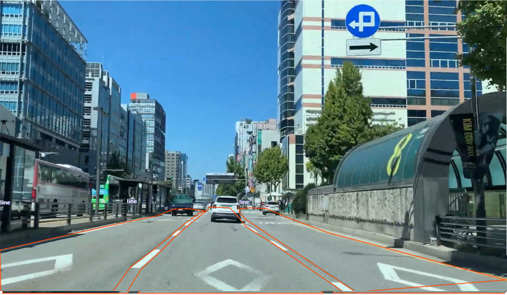

CLASSIFICATION
분류
“자동차가 있다.”
이미지의 종류를 판단합니다.
오늘의 결과물 직접 라벨링한 이미지와 우리 반의 어노테이션 기준
1차시 시작하기 →본문은 1차시 50분 수업용 초안입니다. 제공된 캡처 6장을 확인하고 프로젝트·자동차·도로 영역 예시 4장을 반영했습니다.
확인: 현재 프로젝트는 Object Detection으로 표시됩니다. 폴리곤을 그려도 탐지 모델은 박스를 예측합니다. 도로 마스크를 출력하는 단일 모델을 위해, 기존 어노테이션을 보존하면서 Instance Segmentation 학습에 사용할 수 있는지 먼저 확인해야 합니다.
추가 확인: 일반 객체의 분할 학습용 정답 형식 / 도로 영역의 차로 범위·차량·장애물·가림 처리 기준. 실제 학습 결과와 완성 앱 화면은 아직 없습니다.
캡처·확인 체크리스트 받기01 / MISSION 10분
1차시 · AI에게 도로를 가르치기
자동차가 주변을 이해하려면
무엇을, 어디까지 알아야 할까요?
car · 자동차motor · 오토바이people · 사람lampg · 초록 신호등lampr · 빨간 신호등lampy · 노란 신호등lamp · 색 구분이 어려운 신호등sign · 표지판line · 주행 가능 도로 영역옆 사람과 이야기해 보세요. 위치만 알아도 되는 대상과, 모양까지 알아야 하는 대상은 무엇인가요?
하나의 예측 결과에서 객체를 둘러싼 박스를 표시하고, 차선 사이의 주행 가능한 도로 영역을 색칠합니다.
4차시까지 Roboflow 학습 → API 연결 → Python 웹앱 배포로 이어집니다.
영상은 여러 장의 이미지가 이어진 것입니다. 그중 학습에 사용할 장면을 골라 정답을 표시합니다.
10초 영상도 30fps라면 300프레임입니다. 비슷한 장면을 모두 라벨링해야 할까요?
비슷한 프레임을 반복해서 늘리기보다, 대상의 크기·가림·도로 상황이 다양한 장면을 고릅니다. 데이터 분리 방법은 2차시에서 다룹니다.
02 / CONCEPT 10분
CLASSIFICATION
“자동차가 있다.”
이미지의 종류를 판단합니다.
OBJECT DETECTION
“자동차가 여기에 있다.”
종류와 사각형 위치를 찾습니다.
INSTANCE SEGMENTATION
“이 영역이 자동차다.”
객체 하나하나의 종류와 영역을 찾습니다. 인스턴스 분할이라고도 합니다.
같은 자동차를 세 가지 방식으로 표현한 개념도
대상마다 사각형을 그립니다. 위치를 알 수 있지만 박스 안에는 배경도 포함됩니다.
대상마다 모양을 따라 영역을 표시합니다. 같은 car라도 자동차 두 대를 따로 구분합니다.
설명용 개념도 · 실제 예측이 아닙니다. car 1·2는 서로 다른 객체이며 영상 추적 번호가 아닙니다.
| 비교 | 바운딩 박스 기반 객체 탐지 | 인스턴스 세그멘테이션 |
|---|---|---|
| 주요 출력 | 객체별 클래스·신뢰도·박스 | 객체별 클래스·신뢰도·마스크 박스도 함께 제공하거나 마스크에서 계산 가능 |
| 학습 정답 | 대상을 감싼 사각형 폴리곤 라벨을 박스로 변환해 사용할 수도 있음 | 객체별 윤곽을 따른 영역 폴리곤·마스크의 경계 검수 필요 |
| 알 수 있는 것 | 대상의 위치와 개수 | 위치·개수와 대상의 모양·영역 |
| 우리의 line | 도로를 감싼 사각형 도로 경계 자체는 알 수 없음 | 차선 사이의 주행 가능한 도로 영역 차선 페인트만 선택하는 것이 아님 |
마스크도 모델의 예측이므로 경계가 틀리거나 일부가 빠질 수 있습니다. 분할 정답은 박스 정답보다 보통 경계 검수에 손이 더 갑니다.
사람이 9개 클래스의 위치·영역을 표시합니다. 분할 학습에 맞는 정답인지 검수합니다.
Instance Segmentation으로 학습합니다. 새 영상 프레임에서 객체별 영역을 예측합니다.
자동차·사람·신호등 등은 박스, line은 주행 가능 도로 마스크로 그립니다.
앱에서 박스만 보여 줄 일반 객체도 분할 모델의 학습에 맞는 정답이 필요합니다. 프로젝트를 복제해도 기존 사각형이 자동으로 객체 윤곽이 되지는 않으므로 저장된 정답을 확인합니다.
학습용 정답은 사람이 표시한 기준이고, 예측은 모델이 추정한 결과입니다. line 마스크에 차량·장애물·가려진 도로를 포함할지는 정답 기준을 먼저 정하고 일관되게 적용합니다.
주행 가능한 도로의 모양을 보여주려면
어떤 결과가 필요할까요?
3번, 분할 영역입니다.
주행 가능 영역의 경계를 구분하려면 대상에 해당하는 픽셀 영역이 필요합니다. line은 차선 사이의 주행 가능한 도로 영역입니다. Object Detection 모델의 박스를 채우는 것만으로는 이 경계를 얻을 수 없습니다.
위 도식은 별도 캡처 없이 사용할 수 있습니다. 새 분할 모델의 학습이 끝나면 학습에 사용하지 않은 같은 프레임으로 기존 탐지 모델의 박스 결과와 새 분할 모델의 line 마스크 결과를 각각 캡처합니다.
두 결과의 모델 종류·버전·신뢰도 임계값을 함께 기록합니다. 이 비교는 출력 모양을 설명하는 예시이며 모델 성능의 공정한 비교 실험은 아닙니다. 캡처 파일명과 확인 항목 보기
03 / PREPARE 5분
프로젝트 이름과 유형을 함께 확인합니다. 현재 캡처는 Object Detection입니다. 목표인 도로 마스크 출력을 위해 분할 모델 학습 구성을 먼저 확인합니다.
기존 이름을 그대로 사용합니다. 철자나 대소문자를 바꿔 새 클래스를 만들지 않습니다.
다른 사람의 작업과 겹치지 않도록 작업할 이미지를 확인합니다.

도로 영역에 폴리곤을 그린 것과 모델이 마스크를 출력하는 것은 구분해야 합니다. 기존 어노테이션을 보존하고 분할 학습에 사용할 수 있는지 확인한 뒤 학습합니다.
답이 서로 다르면 작업 전에 기준부터 맞춥니다.
04 / PRACTICE 15분
개인 실습 · 5분
가까운 대상뿐 아니라 작거나 겹친 대상도 찾아봅니다.
선생님이 정한 라벨 형식과 경계 기준을 따릅니다.
선택한 대상과 이름이 맞는지 확인하고 다음 대상으로 이동합니다.

개인 실습 · 7분
차선의 도색 표식, 인도, 도로 밖 배경과 주행 가능 영역의 경계를 구분합니다.
다각형은 윤곽의 방향이 바뀌는 곳에 점을 찍고, 시작점으로 돌아와 닫습니다.
자동 선택을 사용했다면 누락되거나 배경이 포함된 부분을 직접 고칩니다.


이번 마스크는 차선 사이의 주행 가능한 도로 영역입니다. 도로 경계와 곡선을 따라 영역을 만들고, 인도와 도로 밖 배경을 구분합니다.
보이는 영역을 표시할지, 가려진 범위를 추정할지 기준을 먼저 확인합니다. 이미지마다 다른 방식을 섞지 않습니다.
개인 점검 · 3분
이 체크는 현재 화면에서 확인하는 용도입니다. 작업 결과는 Roboflow에서 저장합니다.
04.png와 04(1).png에서 촬영 당시 전체 201장 중 Annotated 135장, Unannotated 66장을 확인했습니다. Dataset은 0이며, 학습용 데이터셋 반영이나 개별 이미지의 최종 검수가 완료되었다는 뜻은 아닙니다.
두 목록 화면은 계정 정보가 포함되어 원본을 보관하고 강의에는 수치만 반영했습니다. 저장 점검 예시가 필요하면 완료한 이미지 한 장을 다시 열어 라벨이 유지되는지 확인합니다.
05 / REVIEW 10분
짝 활동 · 5분
“여기가 틀렸다”에서 한 걸음 더 나아가, 어떤 기준으로 고칠지 설명합니다.
개별 정리 · 3분
객체 탐지는 종류와 사각형 위치를 찾고, 인스턴스 분할은 객체별 종류와 영역을 찾습니다.
정리 · 2분